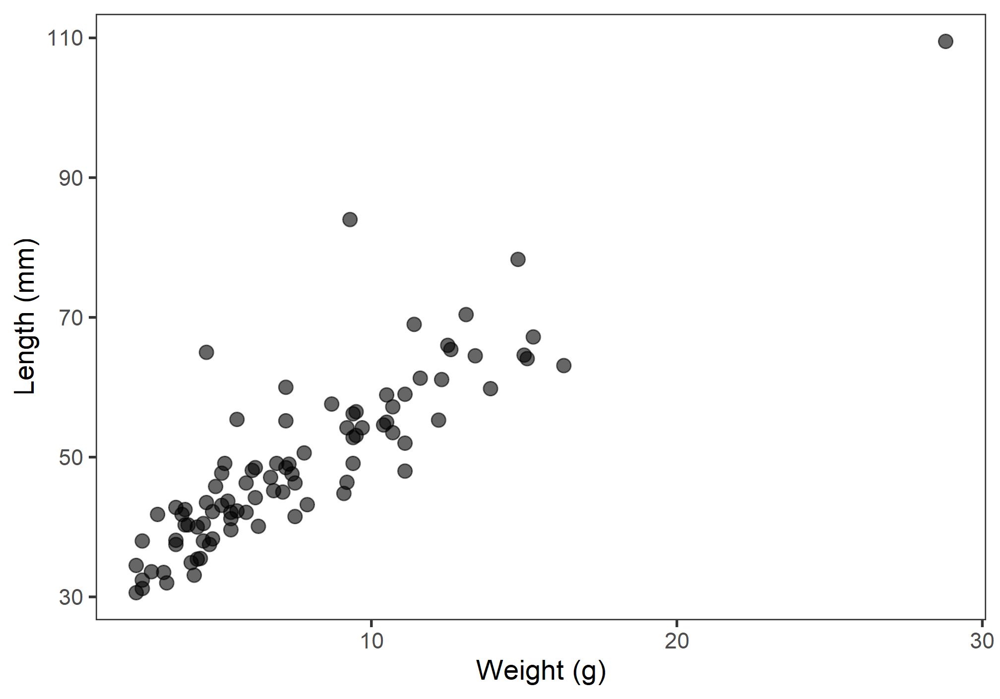
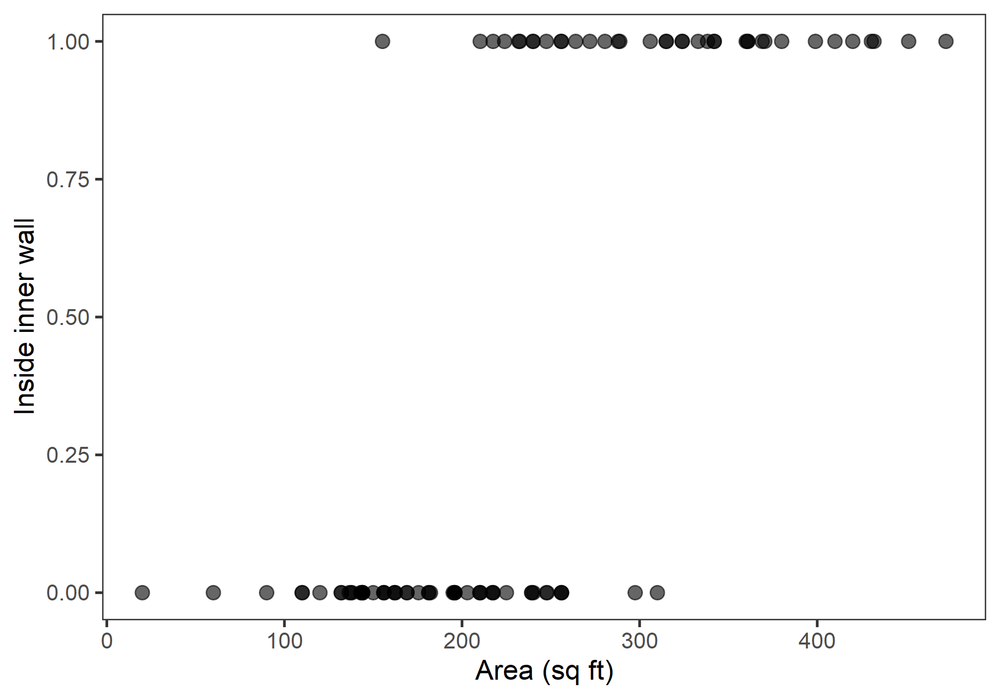
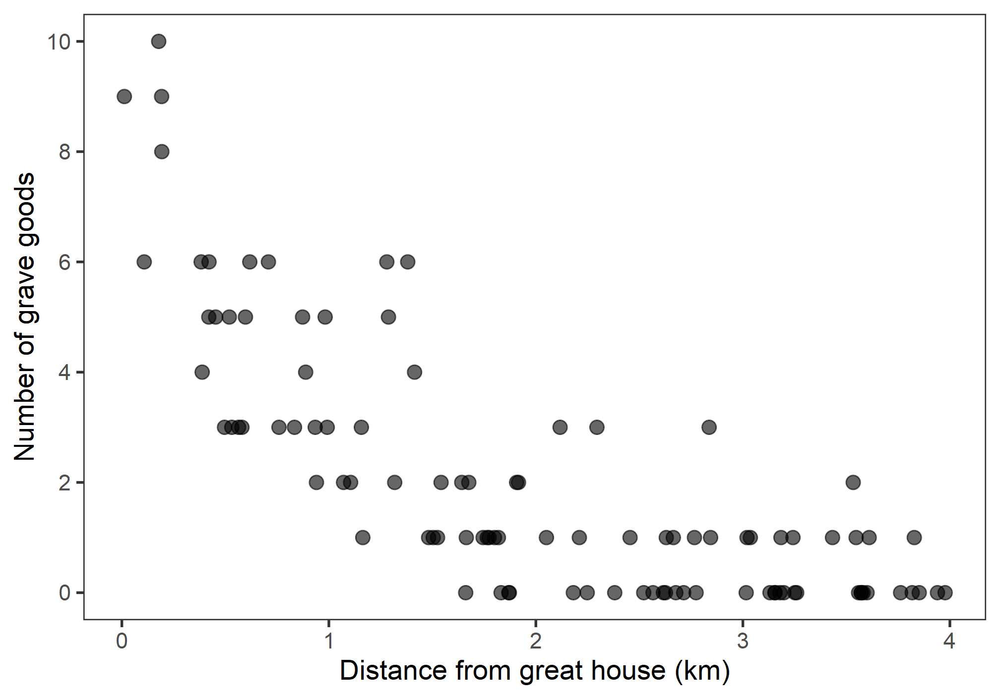

TL;DR Creating and evaluating generalized linear models.
Caution! Please note that all labs assume that you are working in an RStudio Project directory!
This lab will guide you through the process of
We will be using the following packages:
To install these packages, run the following code in your console:
install.packages(
c("archdata", "dplyr", "ggplot2", "here")
)Note: You should not install.packages()
in an Rmd document. Use that function in your R console instead. Then
use library() as part of the preamble in your Rmd document
to check packages out of the library and use them in that R session.
This should always go at the start of your document!
library(archdata)
library(dplyr)
library(ggplot2)DartPoints
archdatagrave_goods
Handaxes
archdataSnodgrass
site_counts
In this section and the following, I will walk you through how to make the Generalized Linear Models (or GLMs) introduced in the lecture with R. Then, in the exercises for each section, we’ll work through an additional example for each. We’ll start by fitting a model with a normal or Gaussian family distribution. The question we hope to answer is this:
Question Does the length of an archaic dart point vary as a function of its weight.
To answer that question, we will use the DartPoints data
collected from a site in Fort Hood, Texas.
First, we will load the data into R. For practice, we’ll also write
it to disk and read it back in, in each case using the
here() function to specify relative file paths in our
project folder. Note that I am going to change the name of the object to
darts. While it’s current name is fine, I find that keeping
names short - but descriptive! - and in lowercase format - as far as
that is possible anyway - saves you some typing effort and reduces the
potential for errors in your R code. While we’re at it, we’ll set all
the variable names in the table to lower case using the base R function
tolower() and the dplyr function
rename_with(). Then, to make it clearer that the
name variable is actually a dart type, we’ll
rename it using the dplyr verb rename(). Note
that rename() uses the "new_name" = old_name
syntax. I’ll also convert it to a tibble with
as_tibble() to make it print pretty.
data("DartPoints")
write.csv(
DartPoints,
filename = here("data", "darts.csv"),
row.names = FALSE # <--- prevent R from adding a column of row names
)
remove(DartPoints)
darts <- here("darts", "darts.csv") %>%
read.csv() %>%
as_tibble() %>%
rename_with(tolower) %>%
rename("type" = name)
darts## # A tibble: 91 x 17
## type catalog tarl quad length width thickness b.width j.width h.length
## <fct> <chr> <chr> <chr> <dbl> <dbl> <dbl> <dbl> <dbl> <dbl>
## 1 Darl 41-0322 41CV0536 26/59 42.8 15.8 5.8 11.3 10.6 11.6
## 2 Darl 35-2946 41CV0235 21/63 40.5 17.4 5.8 NA 13.7 12.9
## 3 Darl 35-2921 41CV0132 20/63 37.5 16.3 6.1 12.1 11.3 8.2
## 4 Darl 36-3487 41CV0594 10/54 40.3 16.1 6.3 13.5 11.7 8.3
## 5 Darl 36-3321 41CV1023 12/58 30.6 17.1 4 12.6 11.2 8.9
## 6 Darl 35-2959 41CV0235 21/63 41.8 16.8 4.1 12.7 11.5 11
## 7 Darl 35-2866 41CV0855 25/65 40.3 20.7 5.9 11.7 11.4 7.6
## 8 Darl 41-0323 41CV0536 26/59 48.5 18.7 6.9 14.7 13.4 9.2
## 9 Darl 35-2325 41CV0795 20/48 47.7 17.5 7.2 14.3 11.8 8.9
## 10 Darl 40-0847 41CV1287 05/48 33.6 15.8 5.1 NA 12.5 11.5
## # ... with 81 more rows, and 7 more variables: weight <dbl>, blade.sh <fct>,
## # base.sh <fct>, should.sh <fct>, should.or <fct>, haft.sh <fct>,
## # haft.or <fct>Now, of course, we’ll want to visualize our data, in particular the relationship between dart length and weight. These are quantitative measures, so let’s make a scatter plot.
ggplot(
darts,
aes(weight, length)
) +
geom_point(
size = 3,
alpha = 0.6 # increase transparency to address the over-plotting of points
) +
labs(
x = "Weight (g)",
y = "Length (mm)"
)
Now, let’s fit a GLM! To do that, we’ll use the glm()
function. The syntax for specifying a model with this function should be
familiar to you. It’s just like fitting a linear model with
lm(), albeit with one important exception. You have to
specify an exponential distribution and a link function. To do that, we
use the family argument to glm(), providing it
with a family function that itself takes a link argument.
It looks like this:
glm_darts <- glm(
length ~ weight,
family = gaussian(link = "identity"),
data = darts
)Note that the identity link function is the default for the
gaussian() function, so you don’t actually have to specify
it. The parentheses are not strictly necessary either (for reasons
beyond the scope of this class), so we could instead call the
glm() function this way:
glm_darts <- glm(
length ~ weight,
family = gaussian,
data = darts
)That said, in all the examples that follow, I am going to use the first formulation to make it as explicit as possible that you are always, always, always including a distribution and link function when fitting a GLM.
So, now we have our model. Let’s look at a summary.
summary(glm_darts)
##
## Call:
## glm(formula = length ~ weight, family = gaussian(link = "identity"),
## data = darts)
##
## Deviance Residuals:
## Min 1Q Median 3Q Max
## -10.540 -3.865 -0.598 2.249 30.255
##
## Coefficients:
## Estimate Std. Error t value Pr(>|t|)
## (Intercept) 28.971 1.328 21.8 <2e-16 ***
## weight 2.664 0.152 17.5 <2e-16 ***
## ---
## Signif. codes: 0 '***' 0.001 '**' 0.01 '*' 0.05 '.' 0.1 ' ' 1
##
## (Dispersion parameter for gaussian family taken to be 37)
##
## Null deviance: 14599.0 on 90 degrees of freedom
## Residual deviance: 3294.7 on 89 degrees of freedom
## AIC: 590.9
##
## Number of Fisher Scoring iterations: 2There are four things to note with this summary.
\[AIC = -2\,log\,\mathcal{L} + 2p\]
where \(log\,\mathcal{L}\) is the
log-Likelihood and \(p\) is the number
of parameters in the model (+1 for the estimate of the error variance).
In this case, the model has an intercept, one covariate,
weight, and the error variance, so \(p = 3\).
These are all ways of evaluating the model’s goodness-of-fit, but as
always, we would like to know if the increased complexity is worth it.
There are two ways we can try to answer this question. The first is
simply to compare the AIC score of the model we have just proposed to an
intercept-only model, as the AIC incorporates a penalty for complexity.
As this compares 2 times the negative log-Likelihood (ie the deviance),
a smaller score is always better, so we want the AIC of our proposed
model to be less than the AIC of the null model. To extract the AIC
estimate from a model, we use AIC().
glm_null <- glm(
length ~ 1,
family = gaussian(link = "identity"),
data = darts
)
# is the AIC of the proposed model less than the AIC of the null model?
AIC(glm_darts) < AIC(glm_null)
## [1] TRUEThat’s a bingo! But, let’s take this idea a bit further and try some
inference with it. In particular, let’s use an ANOVA (specifically, a
Likelihood Ratio Test or LRT) to compare the ratio of the likelihoods of
these models to a \(\chi^2\)
distribution. This will tell us if they are significantly different. To
do that in R, we use the anova() function, setting its
test argument to "LRT".
anova(glm_null, glm_darts, test = "LRT")
## Analysis of Deviance Table
##
## Model 1: length ~ 1
## Model 2: length ~ weight
## Resid. Df Resid. Dev Df Deviance Pr(>Chi)
## 1 90 14599
## 2 89 3295 1 11304 <2e-16 ***
## ---
## Signif. codes: 0 '***' 0.001 '**' 0.01 '*' 0.05 '.' 0.1 ' ' 1Because the p-value here is significantly less than the critical value \(\alpha = 0.05\), we can reject the null hypothesis that there is no significant difference in the log-Likelihood of these models. So, our model of dart length as a function of dart weight does indeed fit the data (re: explain the data) better than an interept-only null model.
For these exercises, we’ll use the Handaxes dataset from
the archdata package. We are going to see if we can predict
handaxe length as a function of thickness.
Handaxes table with
data("Handaxes").rename_with(tolower).select() to grab the catalog number
(catalog), length (l), breadth
(b), and thickness (t) variables.rename() to rename l, b,
and t to length, width, and
thickness, respectively. This will make it clearer what
these variables are. Hint: use the "new_name" = old_name
syntax, for example, "length" = l.write.csv() and read.csv(). Make sure when you
write to disk that you use rownames = FALSE, and be sure to
use here() to set the file path. While you do it, replace
Handaxes with handaxes, and
remove(Handaxes).anova() and test = "LRT".
We’re going to do the exact same thing we just did with a Gaussian
GLM, but we’re going to do it with a binary response variable. That
means logistic regression, which requires that we specify a binomial
distribution with a logit link. Here, we’ll be using the
Snodgrass data to answer the following
Question Does the size of a house structure (measured in square feet) make it more or less likely that the structure is found inside the inner walls of the site?
So, first, we’ll load in the data. Again, we’ll write it to disk and
read it back in, changing the name to snodgrass and
removing Snodgrass from our environment. When we read it
back, we’ll also convert it to a tibble and convert all the
variable names to lowercase. Note that Snodgrass has a
number of additional variables. We don’t actually need those for this
exercise, so we’ll subset the table using select() to grab
only the variables of interest, namely the response variable
inside and our predictor area. In its current
form, the response variable inside is a character variable
consisting of two values "Inside" and
"Outside". We’ll want to convert this to a binary numeric
variable with a value 1 if "Inside" and a
value 0 if "Outside". We’ll use
mutate() and a really nice programming function called
ifelse() to do that.
data("Snodgrass")
write.csv(
Snodgrass,
filename = here("data", "snodgrass.csv"),
row.names = FALSE # <--- prevent R from adding a column of row names
)
remove(Snodgrass)
snodgrass <- here("darts", "snodgrass.csv") %>%
read.csv() %>%
as_tibble() %>%
rename_with(tolower) %>%
select(inside, area) %>%
mutate(
inside = ifelse(inside == "Inside", 1, 0) # read as "if Inside, set to 1, else 0"
)
snodgrass## # A tibble: 91 x 2
## inside area
## <dbl> <dbl>
## 1 0 144
## 2 0 256
## 3 1 306
## 4 1 452.
## 5 1 410
## 6 1 264
## 7 1 342
## 8 1 399
## 9 0 60
## 10 0 217
## # ... with 81 more rowsAs before, we’ll plot these data using a scatterplot.
ggplot(snodgrass, aes(area, inside)) +
geom_point(
size = 3,
alpha = 0.6
) +
labs(
x = "Area (sq ft)",
y = "Inside inner wall"
)
Notice anything suspicious? Well, let’s confirm (or deny) that
suspicion with a GLM! Again, we’ll specify an exponential distribution
and a link function using the family argument to
glm(), providing it with a family function that itself
takes a link argument. It looks like this:
glm_snodgrass <- glm(
inside ~ area,
family = binomial(link = "logit"),
data = snodgrass
)Now that we have our model, let’s look at a summary.
summary(glm_snodgrass)
##
## Call:
## glm(formula = inside ~ area, family = binomial(link = "logit"),
## data = snodgrass)
##
## Deviance Residuals:
## Min 1Q Median 3Q Max
## -2.110 -0.481 -0.184 0.288 2.571
##
## Coefficients:
## Estimate Std. Error z value Pr(>|z|)
## (Intercept) -8.66307 1.81844 -4.76 1.9e-06 ***
## area 0.03476 0.00751 4.63 3.7e-06 ***
## ---
## Signif. codes: 0 '***' 0.001 '**' 0.01 '*' 0.05 '.' 0.1 ' ' 1
##
## (Dispersion parameter for binomial family taken to be 1)
##
## Null deviance: 123.669 on 90 degrees of freedom
## Residual deviance: 57.728 on 89 degrees of freedom
## AIC: 61.73
##
## Number of Fisher Scoring iterations: 6Looks like our intercept and slope estimates are significant. How about the deviance? Let’s compare the AIC of this model to the AIC of an intercept-only model. use LRT to see if this model is significantly better than an intercept-only model.
glm_null <- glm(
inside ~ 1,
family = binomial(link = "logit"),
data = snodgrass
)
AIC(glm_snodgrass) < AIC(glm_null)
## [1] TRUE
anova(glm_null, glm_snodgrass, test = "LRT")
## Analysis of Deviance Table
##
## Model 1: inside ~ 1
## Model 2: inside ~ area
## Resid. Df Resid. Dev Df Deviance Pr(>Chi)
## 1 90 123.7
## 2 89 57.7 1 65.9 4.6e-16 ***
## ---
## Signif. codes: 0 '***' 0.001 '**' 0.01 '*' 0.05 '.' 0.1 ' ' 1A bingo two-times!
For these exercises, we’ll use the DartPoints dataset
from the archdata package. We are going to use length to
see if we can discriminate Pedernales dart points from the other dart
points.
DartPoints table with
data("DartPoints").rename_with(tolower).select() to grab the name (name) and
length (length) variables.rename() to rename name to
type. Hint: use the "new_name" = old_name
syntax, for example, "length" = l.mutate() and
ifelse() to add a column pedernales that is
1 if the type is Pedernales and 0 otherwise.
Hint: fill in the ellipsis in
mutate(pedernales = ifelse(type == ...)).write.csv() and read.csv(). Make sure when you
write to disk that you use rownames = FALSE, and be sure to
use here() to set the file path. While you do it, replace
DartPoints with darts, and
remove(DartPoints).anova() and test = "LRT".
Once more into the breach! Only this time, we’re going to do it with
a response variable consisting of counts. That means poisson regression,
which requires that we specify a poisson distribution with a log link.
Here, we’ll be using the grave_goods data to answer the
following
Question Does distance from a great house (measured in kilometers) drive variation in the number of grave goods at archaeological sites?
So, first, we’ll load in the data. This time, we’ll have to download the data, then load it into R.
download.file(
"https://raw.githubusercontent.com/kbvernon/qaad/master/datasets/grave_goods.csv",
destfile = here("data", "grave_goods.csv")
)
grave_goods <- here("data", "grave_goods.csv") %>%
read.csv() %>%
as_tibble()
grave_goods## # A tibble: 100 x 2
## goods distance
## <dbl> <dbl>
## 1 3 1.16
## 2 0 3.16
## 3 2 1.64
## 4 2 3.53
## 5 0 3.76
## 6 9 0.192
## 7 3 2.12
## 8 0 3.57
## 9 1 2.21
## 10 0 1.83
## # ... with 90 more rowsAs before, we’ll plot these data using a scatterplot. Note that I use
scale_y_continuous() to change the breaks and labels on the
y-axis to remove any decimal values. That’s just to emphasize that this
is count data.
ggplot(grave_goods, aes(distance, goods)) +
geom_point(
size = 3,
alpha = 0.6
) +
scale_y_continuous(
breaks = seq(0, 10, by = 2),
labels = seq(0, 10, by = 2)
) +
labs(
x = "Distance from great house (km)",
y = "Number of grave goods"
)
Looks like there could be a trend, maybe… Let’s use a GLM to find
out! Again, we’ll specify an exponential distribution and a link
function using the family argument to glm(),
providing it with a family function that itself takes a
link argument. It looks like this:
glm_goods <- glm(
goods ~ distance,
family = poisson(link = "log"),
data = grave_goods
)Now that we have our model, let’s look at a summary.
summary(glm_goods)
##
## Call:
## glm(formula = goods ~ distance, family = poisson(link = "log"),
## data = grave_goods)
##
## Deviance Residuals:
## Min 1Q Median 3Q Max
## -1.837 -0.858 -0.432 0.500 2.299
##
## Coefficients:
## Estimate Std. Error z value Pr(>|z|)
## (Intercept) 2.1100 0.1092 19.3 <2e-16 ***
## distance -0.9551 0.0835 -11.4 <2e-16 ***
## ---
## Signif. codes: 0 '***' 0.001 '**' 0.01 '*' 0.05 '.' 0.1 ' ' 1
##
## (Dispersion parameter for poisson family taken to be 1)
##
## Null deviance: 263.933 on 99 degrees of freedom
## Residual deviance: 88.369 on 98 degrees of freedom
## AIC: 280.4
##
## Number of Fisher Scoring iterations: 5Looks like our intercept and slope estimates are significant. How about the deviance? Let’s compare the AIC of this model to the AIC of an intercept-only model. use LRT to see if this model is significantly better than an intercept-only model.
glm_null <- glm(
goods ~ 1,
family = poisson(link = "log"),
data = grave_goods
)
AIC(glm_goods) < AIC(glm_null)
## [1] TRUE
anova(glm_null, glm_goods, test = "LRT")
## Analysis of Deviance Table
##
## Model 1: goods ~ 1
## Model 2: goods ~ distance
## Resid. Df Resid. Dev Df Deviance Pr(>Chi)
## 1 99 263.9
## 2 98 88.4 1 176 <2e-16 ***
## ---
## Signif. codes: 0 '***' 0.001 '**' 0.01 '*' 0.05 '.' 0.1 ' ' 1A bingo three-times!
For these exercises, we’ll use the site_counts dataset.
We are going to use elevation to predict site counts per kilometer on an
east-west transect through Utah.
site_counts data withdownload.file(
"https://raw.githubusercontent.com/kbvernon/qaad/master/datasets/site_counts.csv",
destfile = here("data", "site_counts.csv")
)anova() and test = "LRT".
No homework this week!